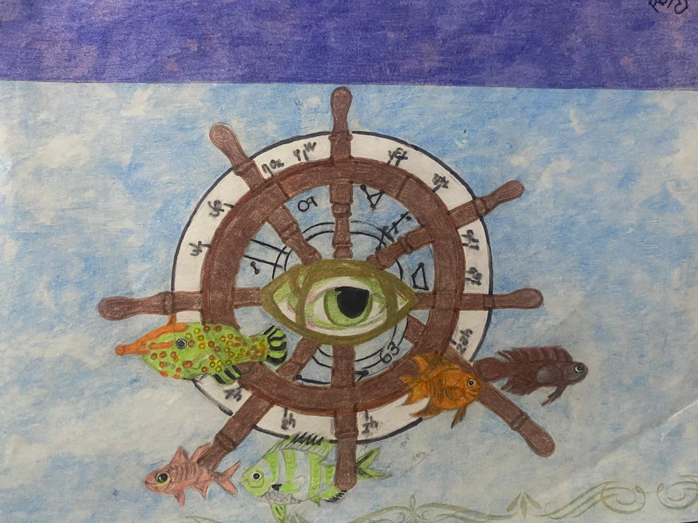
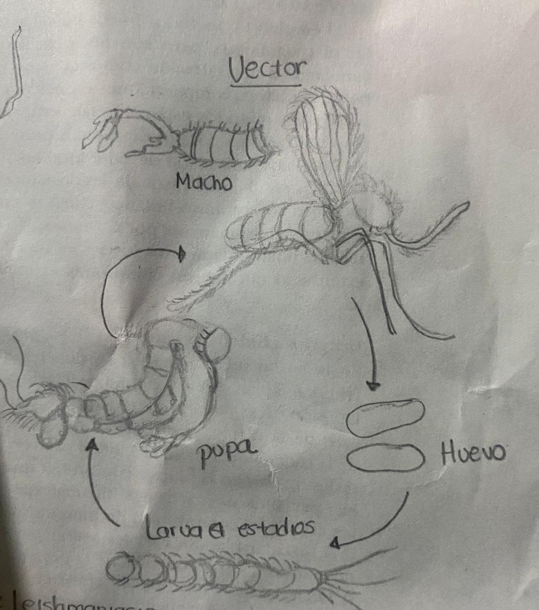
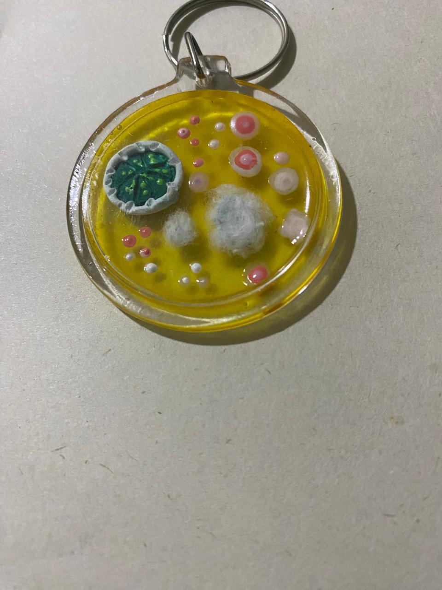
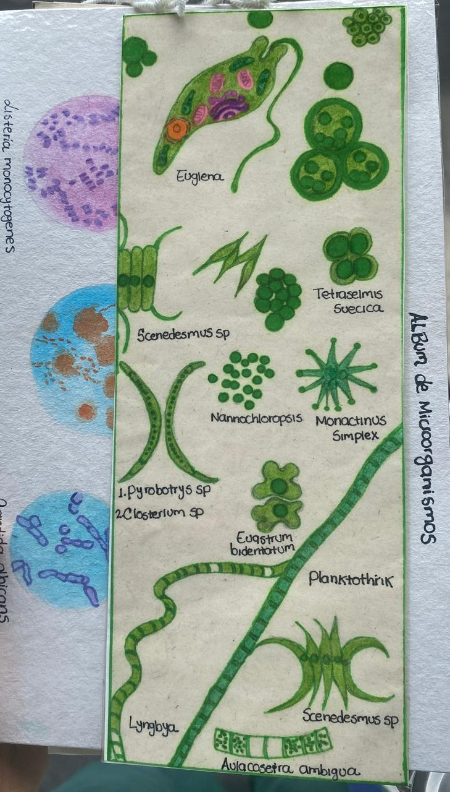
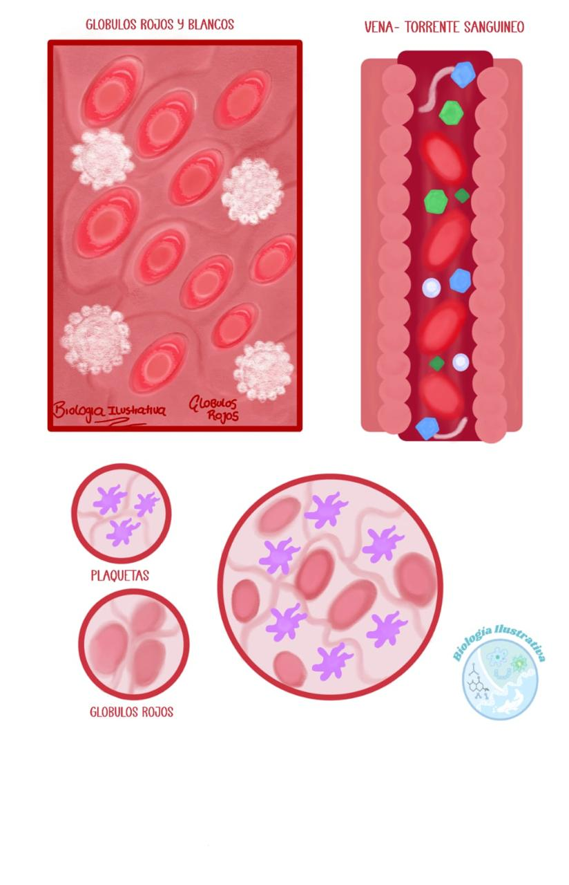

¿Alguna vez has sentido que una imagen expresa más que mil palabras? Desde muy pequeña, siempre lo sentí así.
Desde muy pequeña disfrutaba de los pequeños detalles: las partículas de polvo atravesando la luz del atardecer, los hongos que aparecían en alimentos que dejaba al aire libre, el proceso de fermentación que inducía en jugos. Mis primeros "experimentos" me ayudaron a convertirme en la persona que soy hoy.
Interiorizé ese lema desde la primaria. Mientras tanto, ilustraba escenas de mis programas favoritos, y mi mamá me ayudaba a vender esas ilustraciones. Ella siempre me decía que tenía talento.
En el bachillerato, las clases de biología me fascinaban. Para cada tema hacía ilustraciones que me ayudaban a entender mejor: células animales, vegetales, neuronas… sin saber que eso ya era ilustración científica.
A finales de 2016 elegí el énfasis en ciencias naturales aplicadas. Mi paso por el CASD fue maravilloso — me sentía como una pequeña científica. Cuando llegamos a microbiología, algo hizo clic. Mi favorita fue cuando observamos protozoarios: pude ilustrar cada uno, con sus formas asimétricas. Ahí supe que quería estudiar microbiología.
Ingresé al pregrado en microbiología en la USC llena de ilusión y muchas ideas, porque esta ciencia tiene muchísimos enfoques: industrial, ambiental, clínico. Seguí ilustrando con entusiasmo.
En 2020 mi inspiración se apagó un poco. Fueron tiempos complejos: la pandemia, la enfermedad huérfana de mi tía paterna, y mi cuerpo y mente comenzaron a pasarme factura por años de no atenderme.
Llegaron mis prácticas académicas: el momento de enfrentarme a la realidad profesional y ver de cerca la belleza de los microorganismos. Disfrutaba estar en el laboratorio, observando colonias de bacterias y hongos que eran pura inspiración visual.
En medio del caos, creé un emprendimiento: "Llaveros de Micro", hoy Biología Ilustrativa. Hacía llaveros inspirados en cultivos microbianos — no era perfecto, pero me permitió canalizar emociones y acercarme a lo que hoy reconozco como ilustración científica.
Terminé mis clases del pregrado en microbiología. Ese año pude indagar mucho más en la ilustración desde lo análogo. Compré mi primer microscopio y comencé a ilustrar a mis microorganismos favoritos: las microalgas y los protozoarios.
A principios de 2024 me sentía llena de dudas, en búsqueda de un lugar donde encajar. Hasta que, a mediados de junio, buscando ilustraciones de protozoarios, encontré un término que me cambió todo: ilustración científica.
La ilustración científica es un campo muy antiguo. Darwin ilustraba durante sus expediciones, Mendel dibujaba sus garbanzos para documentar sus experimentos. Siempre ha estado ahí, como herramienta para explicar lo complejo desde lo visual.
Gracias a ese descubrimiento, me acerqué al mundo del diseño e inicié mi segundo pregrado en diseño gráfico. Hoy combino mi formación científica con las artes visuales para crear ilustración científica que divulga y educa.
Y yo lo encontré aquí, en la ilustración científica. 🌿






💚 Gracias por estar aquí y por leerme.
Este camino apenas comienza, y me alegra recorrerlo con personas curiosas como tú.